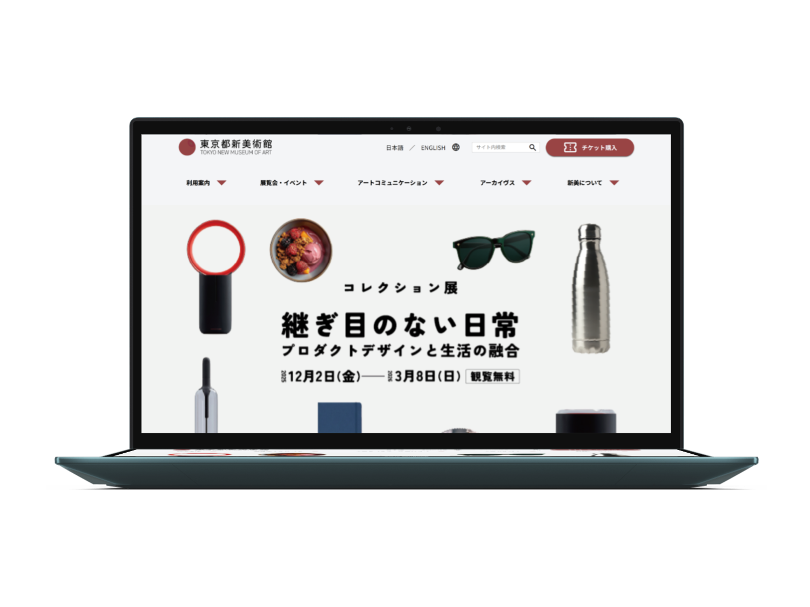

東京都美術館 ウェブサイト・リニューアル案（個人制作）
多様なユーザーを迷うことなく求める情報に導くため、
公共性の高いウェブサイトのデザインを再構築。
東京都美術館のウェブサイトは、展示情報やアクセス方法、館の活動など必要な情報が網羅されているものの、その情報の多さから、ユーザーが目的の情報にたどり着きにくいという課題があると感じていました。
コンセプト公立美術館という高い公共性を踏まえ、年齢、国籍、背景を問わず、あらゆるユーザーが迷わず目的の情報にたどり着けることをコンセプトに情報設計を行いました。
調査・分析この課題を解決するため、国内外の主要な美術館サイトのトップページ構成を比較し、既存サイトが抱える情報の密度とユーザーの導線を分析しました。ユーザーが求める実用的な利便性と、美術館側が伝えたい文化的な魅力を共存させるための情報設計を行いました。
具体的には、来館者が最も早く知りたい情報である現在の開館状況をファーストビュー直下の最優先エリアに配置することで、訪問時の安心感を即座に提供できるよう配慮しています。また、一般の方や学校関係者、お子様連れなど、ユーザーの属性に合わせた専用のナビゲーションセクションを設け、ユーザーごとに必要な情報へ最短でアクセスできる導線を構築しました。
利便性を確保した上で、開催中の展覧会やイベント、最新ニュースといった美術館の活気ある情報を、自然な流れでユーザーに届けるようにしました。
東京都立美術館のアイデンティティである象徴的な赤色をメインカラーとして継承し、歴史ある施設の格調を保ちつつ、画面全体を引き締めるアクセントとして活用しています。美術作品を引き立てるためレイアウトはシンプルにしつつ、直感的に情報を拾い上げることができるデザインを意識しました。